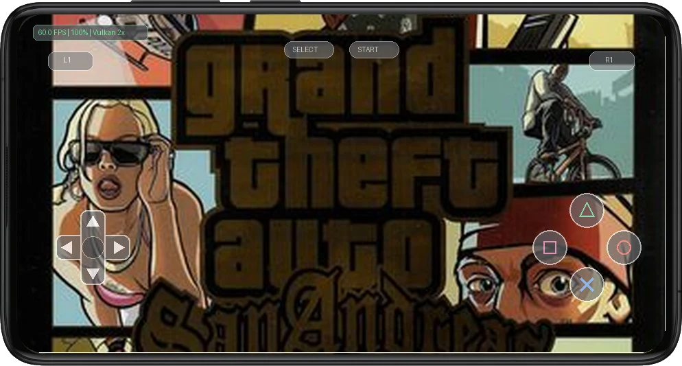
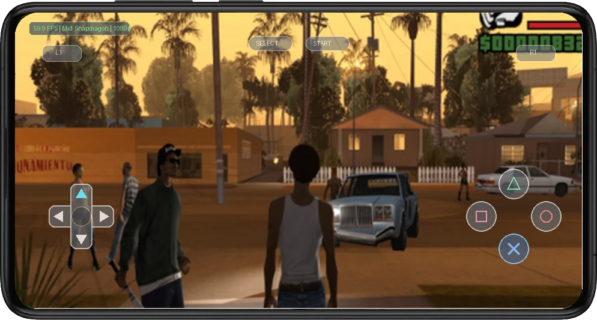

📱 Mobile Gameplay & Touch Controls in Action
Real-time emulation running with active on-screen touch controls on Android at 60 FPS.


1. Legacy & Historical Context
grand Theft Auto San Andreas completely redefined what was deemed technically achievable on the PS2, pushing disc streaming bandwidth, physics rendering, dynamic pedestrian AI, and weather simulation across a continuous open-world environment without transition loading screens.
Playing grand Theft Auto San Andreas on an Android smartphone unlocks crisp texture filtering, vast draw distances that dwarf original console limits, instantaneous save-state reloading, and silky smooth 60 FPS performance that elevates the crime saga to modern standards.
2. Optimal Mobile Emulation Settings
To achieve an uncompromising 60 FPS experience with zero thermal throttling on modern Qualcomm Snapdragon processors (e.g., Snapdragon 778G, 8+ Gen 1, 8 Gen 2, and 8 Gen 3), apply the following tuned configuration inside NetherSX2 / AetherSX2:
- Backend Renderer: Select the Vulkan backend for Snapdragon Adreno devices. Vulkan bypasses OpenGL driver bloat, reducing GPU draw call overhead by ~40% and preventing thermal throttling during extended sessions.
- Internal Resolution: Mid-range devices (Snapdragon 778G / 7+ Gen 2) should run at 2x native (720p/1080p). Flagship chips (Snapdragon 8 Gen 1/2/3) easily sustain 3x to 4x native resolution with flawless frame pacing.
- Texture Filtering & Upscaling: Set Anisotropic Filtering to 16x to sharpen distant mipmaps on roads and textures. Keep Texture Filtering on "Bilinear (PS2)" to preserve authentic texture smoothing without polygon seam bleeding.
- Audio Driver & Latency: Configure Audio Driver to Cubeb with Synchronization Mode set to "Async Mix" and buffer duration at 20ms. This prevents audio crackle when momentary frame fluctuations occur.
- CPU Multithreading & Sync: Toggle "Multi-Threaded VU1 (MTVU1)" ON to offload vertex calculation to an independent CPU core. Keep EE Cycle Rate at 100% (Normal) to avoid internal game logic slowdown.
3. Known Graphical Fixes & Emulation Patches
Vehicle Headlight Beam Offset & Missing Heat Haze
The Issue: At high internal resolutions, headlight halos render several pixels detached from lamp fixtures, and high-temperature atmospheric shimmering can produce horizontal gray line artifacts.
The Fix: In Advanced Hardware Fixes, set "Half-Pixel Offset" to "Special (Texture)" and set "Round Sprite" to "Half". Set "Texture Preloading" to Full to prevent micro-stutters during high-speed vehicle cruising.
Flickering Mini-Map Radar & Text Seams
The Issue: Bilinear filtering can blur the edges of the HUD radar circle and create transparent seam artifacts along vehicle speedometer dials.
The Fix: Keep Texture Filtering set strictly to "Bilinear (PS2)" and enable "Align Sprite" in manual hardware fixes.
4. Touch Controls vs. Bluetooth Gamepads
Navigating intense action sequences and camera panning in grand Theft Auto San Andreas via capacitive touch controls works reliably when using a customized on-screen layout. Placing the virtual thumbstick slightly closer to the lower screen edge and scaling action buttons to 110% ensures comfortable reach without obstructing on-screen visual hazards.
For extended gaming sessions and demanding boss encounters, snapping your smartphone into a USB-C telescopic gamepad (such as the Razer Kishi or GameSir G8) or syncing a Bluetooth PlayStation DualSense controller provides authentic tactile feedback. Physical analog sticks and textured shoulder bumpers eliminate thumb fatigue and grant flawless precision control.
5. Final Verdict & Review Score
Overall romstofun Score
Community Choice & Verified Playable
Ready to Play on Your Android Device?
Get the companion application on Google Play for one-tap controller profiles, optimal settings, and seamless emulation.
Get on Google Play ↗